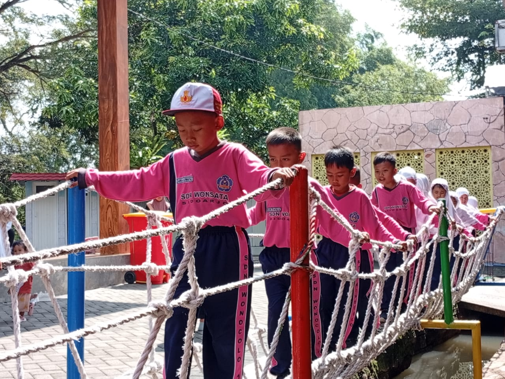

Kegiatan ODL Siswa Siswi SDN Wonocolo 1 di Tahun 2025
Tanggal: 02 Juni 2025
Pada hari Senin, 2 Juni 2025, SDN Wonocolo 1 mengadakan kegiatan ODL (One Day Learning) yang diikuti oleh siswa dari kelas 1 hingga kelas 5. Kegiatan ini dilaksanakan di Sebani Pandaan dengan tujuan memberikan pengalaman belajar langsung di luar kelas. Para siswa terlihat sangat antusias mengikuti berbagai kegiatan yang telah dirancang oleh para guru.
Selama kegiatan berlangsung, siswa mengikuti berbagai aktivitas seperti pengamatan lingkungan, mengenal jenis-jenis tanaman, menggambar objek alam, dan permainan edukatif. Para guru membimbing siswa untuk mengaitkan pembelajaran yang biasa didapat di kelas dengan apa yang mereka temui secara langsung di lapangan. Kegiatan ini juga mendorong siswa untuk bekerja sama dalam kelompok dan meningkatkan rasa ingin tahu mereka terhadap alam sekitar.
Kepala Sekolah SDN Wonocolo 1, Ibu Suciati, S.Pd, M.Pd, menyampaikan bahwa kegiatan ODL merupakan bagian dari penerapan Kurikulum Merdeka yang menekankan pembelajaran yang aktif, kontekstual, dan menyenangkan. Beliau berharap melalui kegiatan ini, siswa dapat lebih semangat dalam belajar dan memiliki pengalaman yang berkesan. Kegiatan ditutup dengan sesi refleksi dan foto bersama seluruh peserta.
← Kembali ke daftar berita